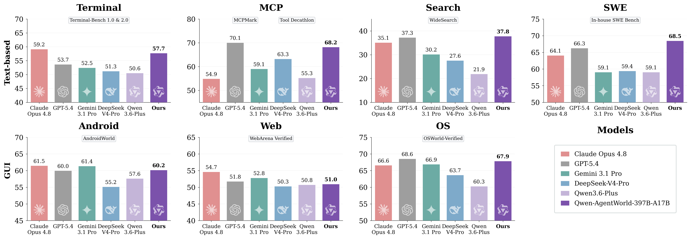

World model 的判定标准是接口。模型接收状态和动作，预测环境随后返回什么。介质可以是像素、latent state、3D occupancy，也可以是文本。
Qwen-AgentWorld 的 world 是数字任务环境。文件系统、终端、工具返回、网页、搜索结果、UI 层级、代码仓库和测试反馈共同构成 agent 所处的世界。模型预测的未来相应变成文本、JSON、accessibility tree、terminal buffer 或 tool response。
Qwen-AgentWorld 关心的核心问题很窄：LLM agent 做出一个动作以后，环境会返回什么。
World Models: A Comprehensive Survey 把世界模型拆成 architecture、methodological family、reasoning strategy 和 application domain 四条轴。按这张坐标图，Qwen-AgentWorld 属于 language-only / transformer-based / LLM-as-world-model / digital-agent simulator 这条分支。这个定位已经足够：它处理的是 agent 与数字环境之间的状态转移。连续控制 world model 只提供接口类比：状态、动作、下一观测。
这个名字成立的条件
狭义 model-based RL 里的 world model 学习下一状态和 reward：
Qwen-AgentWorld 把这行公式迁移到语言环境。状态可以是 shell prompt、文件树、tool schema、网页 DOM、UI accessibility tree、搜索上下文或代码 diff。动作可以是 shell command、tool call、search query、click、patch 或 test command。下一观测是命令输出、API response、搜索摘要、页面变化、traceback 或测试结果。
文本世界模型因此需要满足四个条件。
- 状态必须描述环境，不能只描述对话。
- 动作必须进入预测。换一个 action，下一观测要变化。
- 预测必须保持跨回合一致。文件、页面、工具状态和历史结果不能随意重置。
- 预测必须服务行动。它要进入训练、规划、评估、扰动生成或行动前预演。
Agent world model 缩小的是世界范围：只建模 agent 能作用、能观测、能验证的任务环境。Language world model 改变的是表示介质：用文本和结构化 token 承载状态转移。两者仍然共享同一个接口。
| 机器人 world model | LLM agent 文本 world model |
|---|---|
| physical state / latent state | task state / tool state / UI tree / terminal state |
| torque / action chunk / motion command | tool call / shell command / search query / code patch |
| next observation, reward, termination | tool response, stdout, page state, test result |
| physics constraint | API schema, file-system state, verifier, hidden task rule |
| rollout drift | false belief, fabricated state, broken plan, stale search fact |
数字环境本来就大量暴露为文本和结构化对象。文本世界模型的难点在于保留 action consequence：动作改变状态，状态约束下一次反馈，预测结果影响 agent 的后续行动。
Qwen-AgentWorld 做了什么
Qwen-AgentWorld technical report 在 2026 年 6 月 23 日提交。官方 GitHub 仓库 随后发布 Qwen-AgentWorld-35B-A3B 权重和 AgentWorldBench 数据集。397B-A17B 是报告中的大模型结果。公开主模型是 35B total / 3B active、256K context 的 MoE 版本。
论文把七类 agent 环境统一到 next-observation prediction：MCP、Search、Terminal、SWE、Android、Web、OS。GUI 域使用 accessibility tree 和 UI view hierarchy。这个选择让 terminal、tool call、browser、OS 和 GUI 进入同一个语言模型训练目标。

训练分三段。CPT 使用超过 1000 万条真实环境交互轨迹和专业领域语料，学习状态转移和领域知识。SFT 用显式推理轨迹激活 next-state prediction。RL 使用 LLM rubric judge 和 rule-based verifier 的混合奖励提升模拟保真度。
论文也处理了几个训练细节：API echo 和 boilerplate turn 不该贡献太多 loss；长 context 短 output 让 RL 计算主要花在 prompt 上；开放式 judge reward 会被自我夸奖句式攻击。
评测使用 AgentWorldBench：2170 个回合级样本，来自 5 个前沿模型在 9 个已有 benchmark 上的真实环境交互。Qwen-AgentWorld-397B-A17B 总分 58.71，高于论文表里的 GPT-5.4 58.25。35B 模型从 Qwen3.5-35B-A3B 的 47.73 提升到 56.39。

| 对象 | 报告数字 | 读法 |
|---|---|---|
| AgentWorldBench | 2170 turn-level samples, 7 domains | 评测下一步环境观测预测质量 |
| Qwen-AgentWorld-397B-A17B | 58.71 overall | 报告中的最强版本，尚需外部复核 |
| Qwen-AgentWorld-35B-A3B | 56.39 overall, +8.66 over base | 公开权重版本，适合社区检查和复现 |
| Search domain | 最高 37.82 | 动态网络事实仍然最难模拟 |
| GUI domains | 397B 在 GUI 平均第五 | 文本 UI 状态没有吃到完整多模态预训练红利 |
做对的部分
状态表示
很多数字环境已经有结构化状态。Terminal 有命令输出和工作目录。MCP 有 tool schema 和 JSON response。SWE 有文件内容、diff、traceback 和 test result。Web、Android、OS 有 accessibility tree 或 UI hierarchy。Qwen-AgentWorld 把这些反馈作为训练目标。
这里的关键是表示选择。对 LLM agent 来说，很多 action consequence 本来就以文本和结构化对象出现。Qwen-AgentWorld 不追求完整截图重建。它把 capacity 放在 tool response、stdout、UI tree、test result 这些会改变后续行动的反馈上。
训练目标
早期 LLM-as-world-model 工作常用通用 LLM 直接模拟后果。Qwen-AgentWorld 把环境模拟写进训练目标：CPT 阶段组织环境 trajectory，SFT 阶段加入 next-state prediction reasoning，RL 阶段围绕 observation fidelity 给奖励。
information-theoretic loss masking 也值得保留。很多 tool response 只是 echo 参数或返回样板状态。把这些 turn 全部当作普通 next-token target，会稀释环境变化信号。按 novelty、overlap、length ratio 降低 boilerplate 和 echo turn 的 loss 权重，是一个很工程化的选择。
可被利用的 simulator
世界模型进入 policy training 后会产生新的攻击面。agent 会优化 simulator 里的漏洞，reward model 会被模板化话术欺骗，长 rollout 会放大小错误。Qwen-AgentWorld 把这个问题写进 RL 训练部分：rule-based verifier 给开放式 LLM judge 一个客观锚点；严格抽取 predicted observation；每条 trajectory 只采一个 RL turn，降低 shared-prefix 带来的 reward collapse。
这些细节比榜单数字更有意义。文本世界模型的问题已经变成：怎样训练一个较难被利用的 simulator。
可控扰动
论文中最有启发的实验，是 controllable simulation。普通 Sim RL 在 MCP 上增益有限，Tool Decathlon 甚至下降；加入控制指令以后，MCPMark 提升 +12.3。Search 域里，模型构造完全虚构但自洽的世界，训练出的搜索 agent 能迁移到真实 WideSearch，并报告 +16.29 的 F1 item 增益。
真实环境的数据分布经常过于顺滑。可控模拟可以制造分页、间歇错误、部分结果、缺失摘要和多轮抽取。agent 学到的重点在于信息不完整时怎样继续查询、验证和组合证据。
证据哪里脆弱
Qwen-AgentWorld 的分数需要认真读。AgentWorldBench 是 Qwen 团队自己构建的 benchmark，judge 使用 reference-grounded rubric。这个设计比纯开放式主观评分稳健，也让不同 judge 的排序更一致；但它仍然评估下一观测相似度，和真实 agent 闭环任务成功隔着一层。
58.71 这个总分也提醒我们：模拟质量仍然有限。最高 Search 分数只有 37.82。动态网络事实、搜索结果排序、网页内容变化和长检索链一致性仍然很难。GUI 域落后于 Claude Opus 系列，说明文本化 UI 状态无法覆盖视觉细节、多模态先验和截图里隐含的空间关系。
开源边界也要明确。官方公开 35B-A3B 权重和 AgentWorldBench；397B-A17B 的结果主要依赖论文报告。社区可以从 35B 权重开始检查 system prompt、eval script、domain templates、failure cases 和 benchmark leakage 风险。397B 结果需要更多外部复核。
仍然没解决的问题
文本状态是压缩，也会丢失变量
accessibility tree 适合按钮、文本框、层级结构和可点击对象。它不擅长捕捉视觉布局、遮挡、颜色、细粒度坐标和空间关系。Terminal 和 SWE 域也有类似问题：文件系统状态、进程状态、环境变量、网络状态、包版本、隐藏测试和异步 side effect 很难完整写进 prompt。状态信息不完整时，世界模型只能生成看起来合理的观测。
Search 是非平稳环境
搜索引擎、网页、新闻、论坛和社交内容持续变化。语言世界模型可以模拟搜索交互格式，也能生成看起来真实的结果摘要；事实性和时效性会快速过期。论文里 Search 是所有模型最难的域。长期方案大概率会把模拟器用于训练策略、扰动鲁棒性和低风险预演，真实搜索仍然承担事实获取。
世界模型缺少校准过的不确定性接口
simulator 进入 agent loop 后，最危险的错误形态是自信错误。Qwen-AgentWorld 主要优化 next observation fidelity；未来用于 inference-time planning 时，还需要知道哪些预测可信、哪些要回到真实环境、哪些需要 verifier 或 sandbox。没有 uncertainty、routing 和 fallback，agent 会把模拟结果当成事实。
闭环评估还没到位
AgentWorldBench 评估单回合下一观测预测。Sim RL 和 warm-up 实验提供了下游收益证据，但还需要更系统的闭环测试：用 LWM 做 candidate action lookahead，真实执行第一个动作，再比较任务成功率、成本、错误类型和安全事件。世界模型最终要服务 action selection；下一观测相似只是中间指标。
下一步
Sim-to-real routing。每个 action 先由 LWM 预测可能反馈，再根据不确定性、任务风险和 verifier 可用性决定是否调用真实环境。低风险、格式稳定、可验证的场景使用模拟器；高风险、事实动态、状态缺失的场景回到真实执行。
Verifier as environment interface。Terminal、SWE、MCP、数据库和文件系统都有很多可执行检查。世界模型生成候选观测，verifier 判断关键状态是否满足约束。这个组合比单独依赖 LLM judge 更适合训练和部署。
Digital state schema。今天的 agent 环境状态分散在 prompt、tool schema、trace、DOM、accessibility tree、file snapshot 和 hidden metadata 里。文本世界模型要提升保真度，需要更稳定的状态抽取协议：哪些变量必须进入 state，哪些可以懒加载，哪些必须由真实环境查询。
Model exploitation benchmark。让 agent 明确尝试利用 simulator 漏洞：伪造成功信息、绕过测试、滥用 judge 偏好、构造虚假文件状态、在搜索里诱导编造来源。世界模型评估要记录 agent 能否通过漏洞拿到错误 reward。
Text-visual GUI state。accessibility tree 提供结构，截图提供空间、颜色和视觉证据。下一代 language world model 很可能要同时预测文本状态、视觉变化和可执行约束；否则 Web、Android、OS 域会长期受限。
Decision utility。世界模型对 agent 有用，最终体现在更少真实环境调用、更高任务成功率、更低错误率和更强扰动鲁棒性。未来 benchmark 应该把 next-observation score 和 closed-loop task improvement 绑定起来。
回到综述坐标
Qwen-AgentWorld 在 world model 综述里最准确的位置，是 language-only world models、LLMs as world models、digital agents 和 interactive simulators 的交叉区域。这个位置说明一件事：它的主要问题来自 agent environment simulator。机器人控制或视频预测里的世界模型只提供背景参照。
它把“LLM 模拟行动后果”从 prompting 推到大规模环境轨迹训练：训练目标、数据 schema、奖励、benchmark 都围绕下一观测预测展开。这个对象很具体，服务的是工具调用、搜索、代码执行和 GUI 操作。
| Survey 轴 | Qwen-AgentWorld 的位置 |
|---|---|
| Architecture | language-only / discrete-token / tool-state representation |
| Method family | transformer-based LLM world model, trained natively on environment trajectories |
| Reasoning strategy | simulated environment for policy learning, plus prediction-driven action refinement |
| Application domain | LLM agents, digital environments, GUI/web/OS/tool-use tasks |
Qwen-AgentWorld 最值得保留的贡献，是把“LLM agent 需要世界模型”变成了一个可训练、可评测、可开源检查的对象。它的世界很窄，主要是数字环境；它的状态很工程化，主要是文本和结构化观测；它的评测还有很长的路要走。这个范围限制了 hype，也让后续研究有了具体接口。
文本世界模型的未来，大概不会是单独替代真实环境。更现实的形态是一个 agent infrastructure 层：一部分用于低成本训练，一部分用于可控扰动，一部分用于行动前预演，一部分和真实环境、verifier、sandbox、uncertainty router 共同工作。Qwen-AgentWorld 做对的事，是把这个层的第一版做成了模型和 benchmark。接下来要证明的，是这个层在真实闭环里能减少多少错误、节省多少交互、暴露多少弱点。